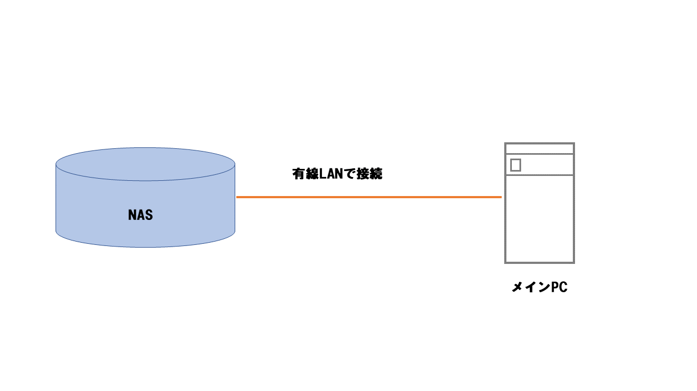

自己紹介
1day3eatといいます！ ホームページを見に来てくださりありがとうございます！
普段はFPSゲームをしています (Apex,Valorant,etc...)
IT系の勉強もしています。特に今はセキュリティーやサーバー、インフラ系の勉強をしています('ω')
また他の趣味として、読書とアニメ鑑賞です。読書に関しては、最近忙しくあまり読めてません(´;ω;｀)
ステータス？？
| 触ったことがあるもの・資格一覧 | |
|---|---|
| 言語 | Java , C , PHP(学習中）, Python |
| OS | Linux , ラズパイ , Windows |
| 資格 | ITパスポート試験,情報セキュリティマネジメント |
作ったもの
簡易的ですが、Raspbery Piを使いNASをつくりました。
ファイル共有はもちろん、特定のアカウントでしかアクセスできないように設定もしました。
他には、LinuxでApacheを使いWebサーバーを構築しました。そして、Webページをつくり外部公開もしました。URLから飛べるようにも設定し、サーバーにどんな攻撃が飛んでくるか観察したりしました。